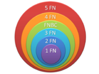

OVI - MODELADO DE DATOS
OVI - MODELADO DE DATOS
La normalización de bases de datos es un proceso que consiste en designar y aplicar una serie de reglas a las relaciones obtenidas tras el paso del modelo entidad-relación al modelo relacional. Las bases de datos relacionales se normalizan para:
- Evitar la redundancia de los datos.
- Disminuir problemas de actualización de los datos en las tablas.
- Proteger la integridad de datos.
En el modelo relacional es frecuente llamar tabla a una relación, aunque para que una tabla sea considerada como una relación tiene que cumplir con algunas restricciones:
- Cada tabla debe tener su nombre único.
- No puede haber dos filas iguales. No se permiten los duplicados.
- Todos los datos en una columna deben ser del mismo tipo.
- Relación = tabla
- Registro = fila, o tupla
- Atributo = columna o campo
- Clave = llave o código de identificación
- Clave Primaria = clave candidata elegida
- Clave Externa = clave ajena o clave foránea
- Dependencia Multivaluada = dependencia multivalor
- 1FN = Significa, Primera Forma Normal o 1NF del inglés First Normal Form.

Los términos Relación, Tupla y Atributo derivan del álgebra y cálculo relacional, que constituyen la fuente teórica del modelo de base de datos relacional.
Todo atributo en una tabla tiene un dominio, el cual representa el conjunto de valores que el mismo puede tomar. Una instancia de una tabla puede verse entonces como un subconjunto del producto cartesiano entre los dominios de los atributos.
Las formas normales son aplicadas a las tablas de una base de datos. Decir que una base de datos está en la forma normal N es decir que todas sus tablas están en la forma normal N.
En general, las primeras tres formas normales son suficientes para cubrir las necesidades de la mayoría de las bases de datos. El creador de estas 3 primeras formas normales (o reglas) fue Edgar F. Codd

Primera Forma Normal (1FN)
Una tabla está en Primera Forma Normal si:
- Todos los atributos son atómicos. Un atributo es atómico si los elementos del dominio son simples e indivisibles.
- La tabla contiene una clave primaria única.
- La clave primaria no contiene atributos nulos.
- No debe existir variación en el número de columnas.
- Los Campos no clave deben identificarse por la clave (Dependencia Funcional)
- Debe Existir una independencia del orden tanto de las filas como de las columnas, es decir, si los datos cambian de orden no deben cambiar sus significados
Esta forma normal elimina los valores repetidos dentro de una Base de Datos.
<Segunda Forma Normal (2FN)
Dependencia Funcional. Una relación está en 2FN si está en 1FN y si los atributos que no forman parte de ninguna clave dependen de forma completa de la clave principal. Es decir que no existen dependencias parciales. (Todos los atributos que no son clave principal deben depender únicamente de la clave principal).
- Cree tablas independientes para conjuntos de valores que se apliquen a varios registros.
- Relacione estas tablas con una clave externa.
Los registros no deben depender de nada que no sea una clave principal de una tabla, una clave compuesta si es necesario. Por ejemplo, considere la dirección de un cliente en un sistema de contabilidad. La dirección se necesita en la tabla Clientes, pero también en las tablas Pedidos, Envíos, Facturas, Cuentas por cobrar y Colecciones. En lugar de almacenar la dirección de un cliente como una entrada independiente en cada una de estas tablas, almacénela en un lugar, ya sea en la tabla Clientes o en una tabla Direcciones independiente.
Tercera Forma Normal (3FN)
Los valores de un registro que no sean parte de la clave de ese registro no pertenecen a la tabla. En general, siempre que el contenido de un grupo de campos pueda aplicarse a más de un único registro de la tabla, considere colocar estos campos en una tabla independiente.
Por ejemplo, en una tabla Contratación de empleados, puede incluirse el nombre de la universidad y la dirección de un candidato. Pero necesita una lista completa de universidades para enviar mensajes de correo electrónico en grupo. Si la información de las universidades se almacena en la tabla Candidatos, no hay forma de enumerar las universidades que no tengan candidatos en ese momento. Cree una tabla Universidades independiente y vincúlela a la tabla Candidatos con el código de universidad como clave.
EXCEPCIÓN: cumplir la tercera forma normal, aunque en teoría es deseable, no siempre es práctico. Si tiene una tabla Clientes y desea eliminar todas las dependencias posibles entre los campos, debe crear tablas independientes para las ciudades, códigos postales, representantes de venta, clases de clientes y cualquier otro factor que pueda estar duplicado en varios registros. En teoría, la normalización merece el trabajo que supone. Sin embargo, muchas tablas pequeñas pueden degradar el rendimiento o superar la capacidad de memoria o de archivos abiertos.
Puede ser más factible aplicar la tercera forma normal sólo a los datos que cambian con frecuencia. Si quedan algunos campos dependientes, diseñe la aplicación para que pida al usuario que compruebe todos los campos relacionados cuando cambie alguno.